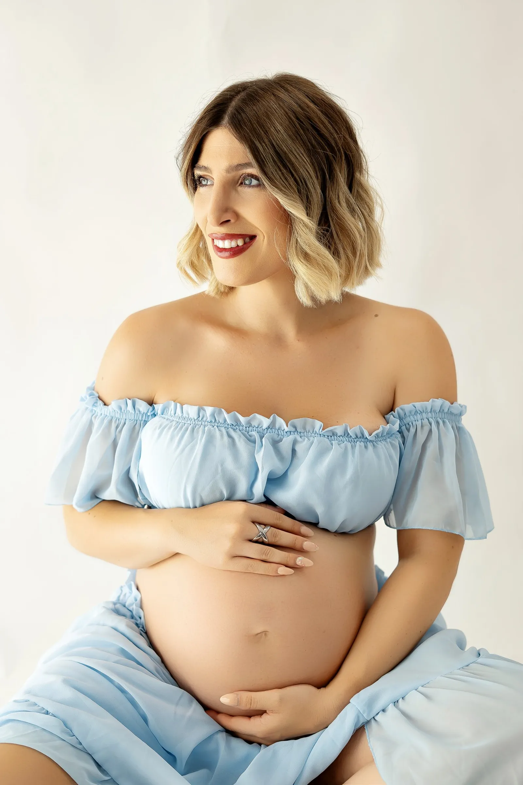

Sesión de embarazo
Embarazo
Un recuerdo de esta etapa tan especial. Tu cuerpo está creando vida y se merece ser recordado.

El embarazo es una de las etapas más bonitas y, a la vez, más fugaces de la vida. Son solo unos meses en los que tu cuerpo cambia cada semana, en los que sientes a tu bebé moverse por primera vez y en los que todo gira alrededor de una espera llena de ilusión. Cuando nace, esa barriguita desaparece casi sin darte cuenta… y por eso merece la pena guardarla.
En la sesión de embarazo creamos imágenes naturales, elegantes y llenas de fuerza. No hace falta que sepas posar: yo te guío en todo momento con indicaciones sencillas, para que te sientas guapa, cómoda y tú misma. Buscamos la luz suave del estudio, los gestos espontáneos y esas miradas que lo dicen todo.
Puedes venir sola, con tu pareja o con tus hijos, que también están esperando a su hermanito. Cada sesión es distinta porque cada embarazo lo es, así que la preparamos juntas según tus gustos y tu estilo.
La fuerza de hoy, el recuerdo de siempre.
Cómo es la sesión
Paso a paso
-
01
Hablamos antes
Me escribes por WhatsApp, vemos fechas y te cuento cómo es la sesión. Te envío una guía con ideas de vestuario, colores y consejos para ese día.
-
02
Llegas al estudio
Te recibo con calma, vemos juntas el vestuario y elegimos los looks. Sin prisas: el tiempo es para ti.
-
03
Hacemos las fotos
Te guío en cada pose para que solo tengas que disfrutar. Primero tú, después en pareja y con tus hijos si vienen.
-
04
Recibes tus fotos
Edito una a una las mejores imágenes y te las entrego en una galería online privada para descargar y compartir.
Estilos de sesión
Tú eliges cómo recordarlo
Vestidos y telas
Vestidos largos y telas con movimiento para fotos elegantes y delicadas.
Natural
Ropa sencilla, una camisa blanca o tus vaqueros favoritos. Tú, tal y como eres.
Blanco y negro
Imágenes atemporales donde la luz y la silueta son las protagonistas.
En pareja y en familia
Fotos con tu pareja y tus hijos, que también están esperando la llegada del bebé.
Algunas fotos
Sesiones reales en el estudio


Consejos para tu sesión
Unos pequeños detalles que ayudan a que todo salga perfecto:
- Evita ropa ajustada o con gomas las horas antes, para que no queden marcas en la piel.
- Hidrata bien la piel de la barriguita los días anteriores.
- Uñas y peinado sencillos y naturales: menos es más.
- Elige colores neutros o suaves si traes ropa propia; los estampados grandes distraen.
- Come algo antes de venir y trae agua: queremos que estés cómoda y con energía.
Preguntas frecuentes
Todo lo que necesitas saber
¿Cuándo se realiza la sesión de fotos?
Lo ideal es entre la semana 28 y la 34 de embarazo: la barriguita ya luce redondita y todavía te sientes ágil y cómoda para moverte y posar. En embarazos múltiples solemos adelantarla un poco.
¿Cuándo hay que reservar?
Te recomiendo reservar durante el segundo trimestre (sobre la semana 20–24) para asegurarte la fecha que mejor te venga. Si ya estás más avanzada, escríbeme igualmente y buscamos hueco lo antes posible.
¿Tengo que llevar algo a la sesión?
En el estudio tengo vestidos, telas y bodies de embarazo para que no tengas que preocuparte por el vestuario. Si quieres, puedes traer alguna prenda tuya con la que te sientas especial (una camisa blanca, unos vaqueros, ropa interior bonita) y detalles con significado: la ecografía, unos patucos, el nombre del bebé… Antes de la sesión te envío una pequeña guía para que vengas tranquila.
¿Pueden participar en la sesión de fotos los papás y hermanos?
¡Claro que sí! Tu pareja y tus hijos pueden participar. Normalmente hacemos primero tus fotos a solas y después las fotos en pareja y en familia, que suelen ser de las más emotivas.
¿Hablamos de tu sesión?
Cuéntame de cuántas semanas estás y te propongo las mejores fechas.
Reserva por WhatsApp